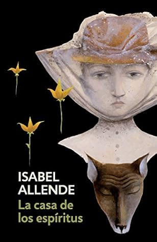

La casa de los espíritus
Reseña por Jorge I. Zuluaga

Ver detalles · Ver reseña en GoodReads (necesita cuenta)
Había retrasado mucho tiempo el momento de comenzar a leer «La casa de los espíritus». Naturalmente, conozco desde hace muchos años la novela y me la habían recomendado, pero estaba esperando, tal vez, el momento apropiado para introducirme en la obra de una autora tan prolija. Me asustaba engancharme de manera obsesiva con la extensa lista de novelas de Isabel Allende (ya me pasó, o me está pasando, con Saramago). O tal vez, simplemente, mis prejuicios no me habían permitido dar el paso definitivo para meterle el diente a un libro tan conocido y a una autora como Allende.
Ahora me arrepiento. Si no lo han hecho, deberían apresurarse a leer la obra de esta grande de la literatura latinoamericana del siglo XX. Bueno, y del siglo XXI. Allende sigue escribiendo y tal parece que las ideas no se le acaban ni en la octava década de su vida. ¡Larga vida a Allende!
Debo confesarles que no me gusta leer reseñas de una novela antes de leerla. A veces ni siquiera me gusta leer la descripción o la contraportada: no quiero que me arruinen ninguna sorpresa. Con «La casa de los espíritus» puede pasar fácilmente, de modo que si son como yo, dejen de leer ahora mismo esta reseña.
Ahora bien, si llegaron hasta aquí es porque o bien ya la leyeron y están curioseando, o simplemente no les importa.
Desde mi punto de vista, «La casa de los espíritus» narra tres historias en una. La historia de un grupo de mujeres extraordinarias, Rosa, Clara, Blanca y Alba, cada una con sus propios poderes, entre mágicos (Clara y Blanca) y muy terrenales (Rosa y Alba). Por otro lado, la historia de un grupo de hombres (Severo, Esteban, Jaime, Nicolás, Esteban, los Pedros), cada quien representando lo peor (Severo, Esteban Trueba, Esteban García) y lo mejor (Nicolás, Jaime, los Pedros) de las masculinidades de su tiempo (la obra se desarrolla entre finales del siglo XIX y casi todo el siglo XX, hasta la década de los 70), que son también las masculinidades del presente. Finalmente, está la historia política, la de los campesinos explotados y el cuasi feudalismo latinoamericano que existió hasta principios del siglo XX, el gobierno socialista de Salvador Allende y la seguida dictadura militar de Pinochet, un período magistralmente retratado en código literario por Isabel Allende.
Naturalmente, estos tres hilos literarios se entrecruzan para narrar la historia de varias familias, en especial las familias Del Valle y Trueba y su relación posterior a través del matrimonio de Clara con Esteban, pero a lo largo de la lectura yo sentí que estos hilos iban cada uno por su cuenta, o se distinguían bastante claramente.
Amé los personajes femeninos de «La casa de los espíritus». Amé la tranquilidad, la conexión con la naturaleza, la personalidad y hasta los poderes sobrenaturales de Clara. Amé la rebeldía de Blanca, el coraje de Alba, el amor terco de la Nana, incluso la entrega de Alba. Personajes sencillamente inolvidables. ¡Grande Allende!
Me encantó la manera como la autora describe eventos cotidianos, eventos naturales y sobrenaturales como si no existiera ninguna solución de continuidad entre ellos ¡Realismo mágico del bueno! Soy un científico y siempre he combatido activamente las pseudociencias y el pensamiento mágico, especialmente cuando es usado en la toma de decisiones o en la educación. Pero también estoy envejeciendo y, al hacerlo, he empezado a entender que los humanos hemos desencantado el mundo y tal vez estamos pagando las consecuencias de ello. Afortunadamente la literatura es la literatura, es decir, tenemos esta dimensión en la que podemos relajar nuestros estrictos esquemas de pensamiento (hablo por mí, naturalmente) y soñar con un mundo encantado habitado por gentes y situaciones muy reales.
Así como amé a muchos de los personajes femeninos de la novela, odié también a los peores personajes masculinos: la intransigencia del padre, Severo —mejor nombre imposible—; la brutalidad, la arbitrariedad, el pensamiento conservador y de derechas de Esteban Trueba; la mente violadora y asesina de Esteban García. Lo peor de las masculinidades tóxicas que han dominado la sociedad por milenios.
Es perturbador saber que, incluso en el tiempo de la información y el Estado de derecho, siguen andando por ahí muchos Severos y muchos Estebanes haciendo cosas similares e incluso peores que las que hacen los personajes de esta novela.
Me encantó aproximarme a través de «La casa de los espíritus» a la historia de Chile en el siglo XX.
Sabía muy poco sobre lo que había pasado en el país latinoamericano que sufrió la más larga y brutal dictadura de ese siglo; o más bien debo decir que sabía lo justo. Sabía que se había elegido a un gobernante socialista en el peor momento de la guerra fría, sabía que había habido un golpe de Estado apoyado por la CIA, sabía que durante la dictadura se había producido una brutal y asesina represión a opositores políticos, especialmente intelectuales y estudiantes; sabía que la dictadura había durado incluso hasta un tiempo que yo mismo puedo recordar. Pero no sabía mucho más. O no sabía profundamente y, aunque «La casa de los espíritus» no es un libro de historia y no creo que haya pretendido serlo, esta sí fue mi primera «inmersión» seria en el tema. El resultado es realmente perturbador.
Una cosa que me sorprendió de la novela fue el increíble parecido de la trama y la manera como se narra la vida de personajes, familias y lugares con una de las obras cumbre de Gabriel García Márquez, «El amor en los tiempos del cólera».
Había terminado la lectura de aquella fantástica novela apenas unas semanas antes y solo pude encontrar paralelos entre la obra del Nobel y «La casa de los espíritus».
Se dice por ahí que Isabel Allende es una hija del boom latinoamericano, y no dudo que la autora chilena haya recibido una importante influencia del realismo mágico del reconocido autor colombiano; pero al comprobar las fechas de publicación, me doy cuenta de que «La casa de los espíritus» fue publicada antes que «El amor en los tiempos del cólera».
Obviamente, no estoy sugiriendo aquí ningún tipo de fraude literario; las obras son lo suficientemente diferentes, y cada una de ellas tiene una altísima dosis de autobiografía personal, familiar y nacional como para pensar que hubo una copia. Pero sí me queda la sensación, después de leer esta novela y reconocer su parecido con la obra de García Márquez, de que tal vez se ha cometido un error con Allende al no reconocerla también con el Premio Nobel de Literatura. Y es que una autora capaz de crear una obra tan grande como esta, sin mencionar las decenas de novelas que no he leído y que estoy seguro son tan buenas, merece de sobra el máximo reconocimiento de la literatura universal.
Pero es claro que yo soy apenas un recién llegado a esta discusión y que mucha tinta se debe haber vertido sobre el tema. Solo quería desahogarme.
No es más. Me voy mejor a empezar a leer la próxima novela de Allende y a esperar que le den su merecido Premio Nobel antes de que se nos muera escribiendo.